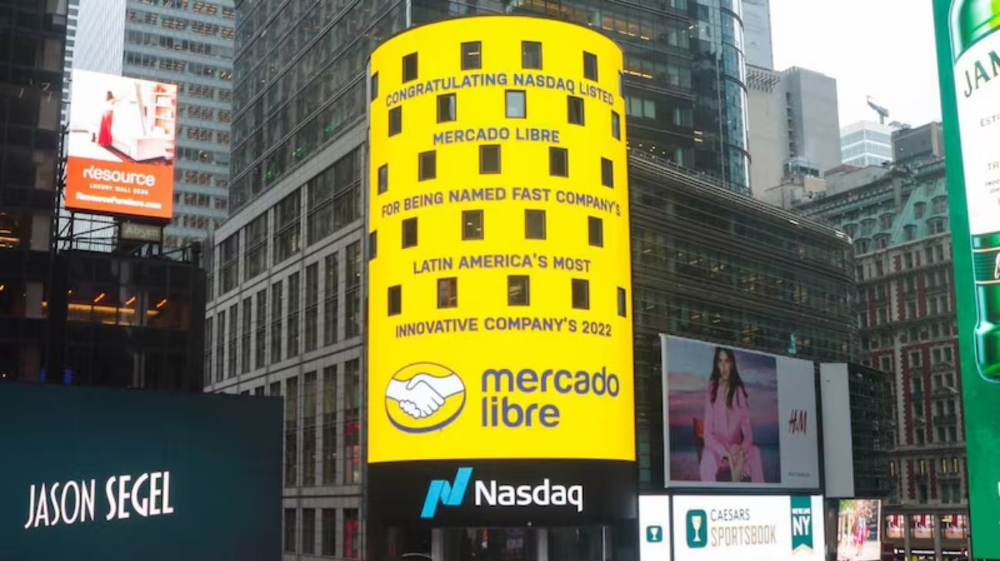

Mercado Libre apuesta por Argentina: US$3.400 millones de inversión y 1.900 nuevos empleos en 2026
En el marco de la Argentina Week 2026 celebrada en Nueva York, Mercado Libre anunció un plan de inversión récord de US$3.400 millones para este año en el país, un 30% más que lo invertido en 2025. Los fondos se destinarán a logística, tecnología y al crecimiento de Mercado Pago, y el plan contempla la incorporación de 1.900 nuevos empleados.

Argentina tuvo otro motivo para celebrar en Nueva York. En el marco de la Argentina Week 2026 —la cumbre organizada por el Gobierno nacional para mostrarle al mundo financiero el nuevo perfil del país y atraer inversiones— Mercado Libre anunció que destinará US$3.400 millones a sus operaciones en Argentina durante este año. La cifra representa un salto del 30% respecto a los US$2.600 millones que la compañía había comprometido para 2025, y consolida a la empresa como uno de los mayores inversores privados del país. El anuncio se produce a semanas de que la compañía presentara sus resultados 2025, los últimos con Marcos Galperin como CEO, ya que desde el 1° de enero de este año Ariel Szarfsztejn asumió la conducción global de la empresa.
Los fondos estarán distribuidos en tres grandes ejes. El primero es la expansión logística: Mercado Libre planea ampliar su red de distribución y desarrollar nuevos centros de almacenamiento para acortar los tiempos de entrega en todo el territorio nacional. El segundo es la mejora tecnológica de su plataforma de comercio electrónico, que hoy conecta a más de 2,7 millones de pymes y emprendedores argentinos con millones de compradores. El tercero, y quizás el más estratégico en el contexto económico actual, es el crecimiento de Mercado Pago, el brazo fintech de la compañía que ya acumula casi 78 millones de usuarios activos mensuales en los países donde opera. En palabras del presidente de Mercado Libre Argentina, Juan Martín de la Serna: "Vamos a ampliar nuestra infraestructura logística para llegar más rápido y mejor a cada punto del país y, al mismo tiempo, profundizar la digitalización financiera para promover mayor inclusión".
El impacto laboral del anuncio también es significativo. La compañía prevé incorporar 1.900 nuevos empleados en distintas áreas estratégicas, sumándose a los más de 16.700 trabajadores que ya tiene en el país. Pero el aporte de Mercado Libre a la economía argentina va más allá del empleo directo: durante 2025 la empresa exportó servicios por US$878 millones, vinculados principalmente a la economía del conocimiento, y aportó US$1.999 millones en impuestos, el nivel más alto registrado por la compañía en el país. En un contexto donde el Gobierno trabaja para aumentar las reservas del Banco Central y sostener el superávit, este tipo de aportes en dólares tienen un peso concreto y directo sobre las cuentas del país.
El anuncio de Mercado Libre llega en un momento en que Argentina atraviesa una seguidilla notable de compromisos de inversión de gran escala. En pocos días, el país vio cómo TGS presentaba un proyecto de US$3.000 millones en líquidos de gas natural, Pampa Energía solicitaba el RIGI para un yacimiento con inversiones por US$4.500 millones, y Southern Energy cerraba el mayor contrato de exportación de GNL de la historia. A ese pelotón de inversiones energéticas se suma ahora Mercado Libre desde el sector tecnológico y financiero, dibujando un panorama donde distintos sectores de la economía parecen estar apostando simultáneamente por el país. Bajo el nuevo liderazgo de Ariel Szarfsztejn, la firma busca ganar mayor participación de mercado aprovechando el impulso con el que cerró el ejercicio anterior. Para Argentina, que necesita inversión privada como motor de crecimiento, cada anuncio de esta magnitud es una señal más de que el clima de negocios está cambiando.